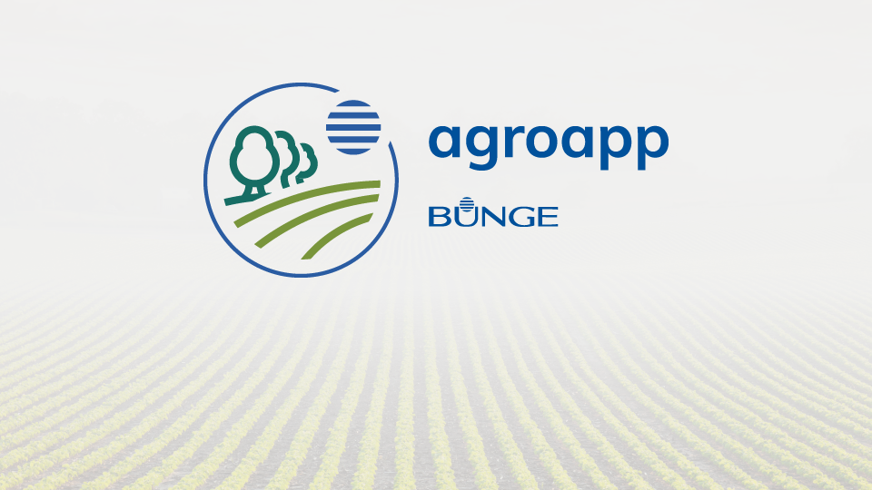
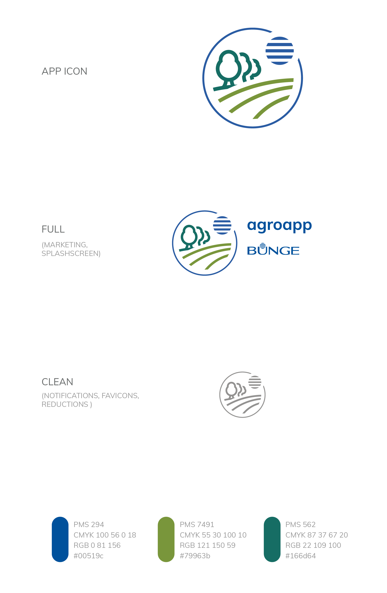
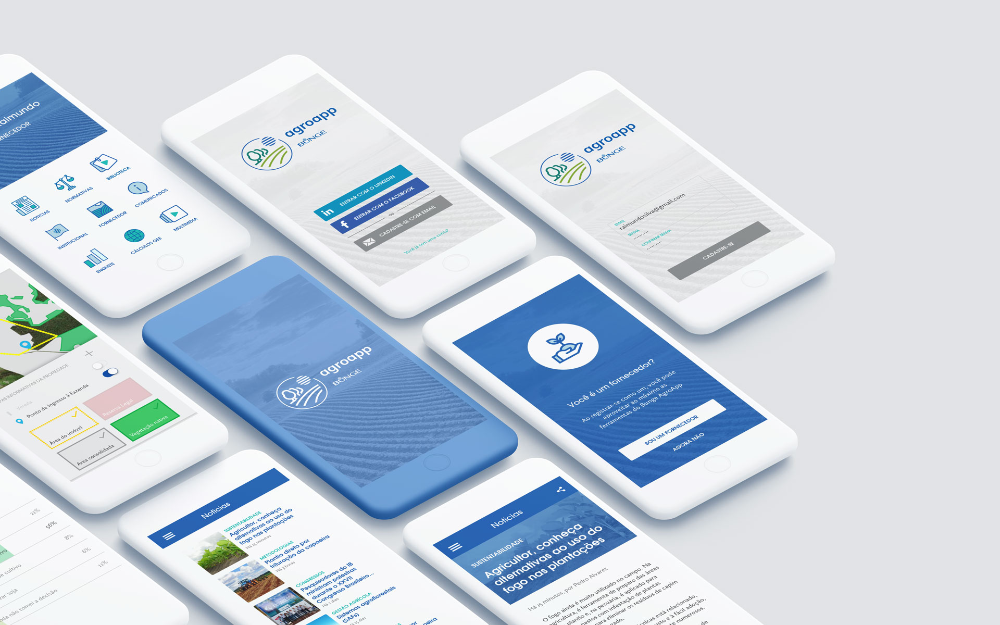

Agroapp
- ClienteBunge Brasil
- FechaDiciembre 2019

Agroapp está destinada los productores rurales de Bunge de todo Brasil, ofreciendo herramientas de gran utilidad para la trabajo diario, por ejemplo, un mapa detallado y con capas de su/s haciendas y un calculador de GEE (gases de efecto invernadero) para concientizar sobre el uso de fertilizantes.
Ademas el usuario accede a una gran cantidad de informacion en forma de noticias, archivos multimedia, noticias de actualidad sobre el agro brasileño, comunicados de la empresa, normativas gubernamentales y encuestas de interes general.


Software
- Adobe Illustrator
- Adobe XD
Construyamos juntos
hola@leandrososa.com